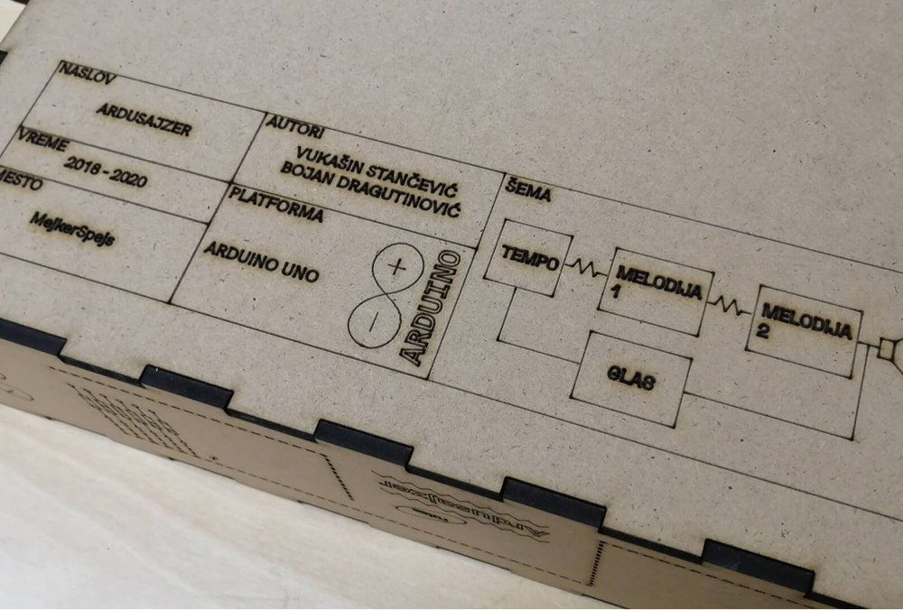
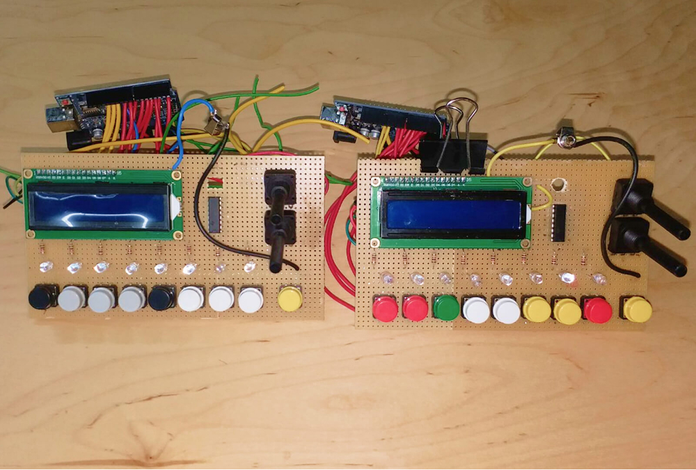
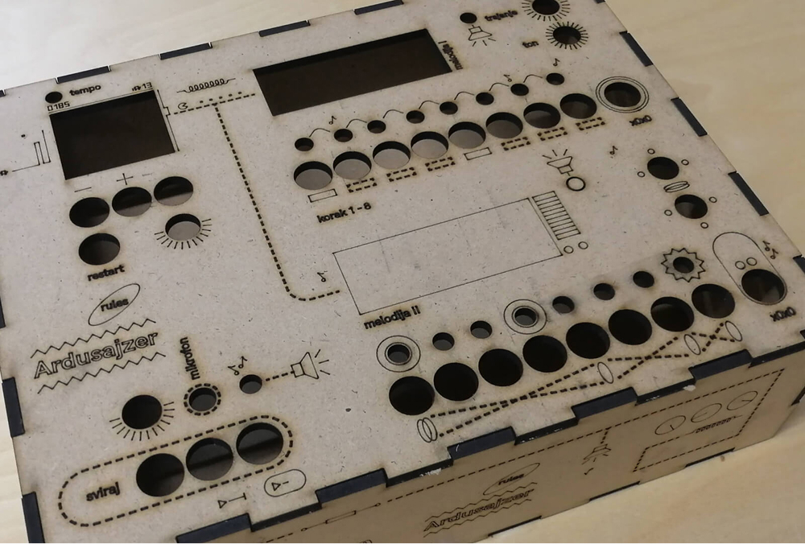
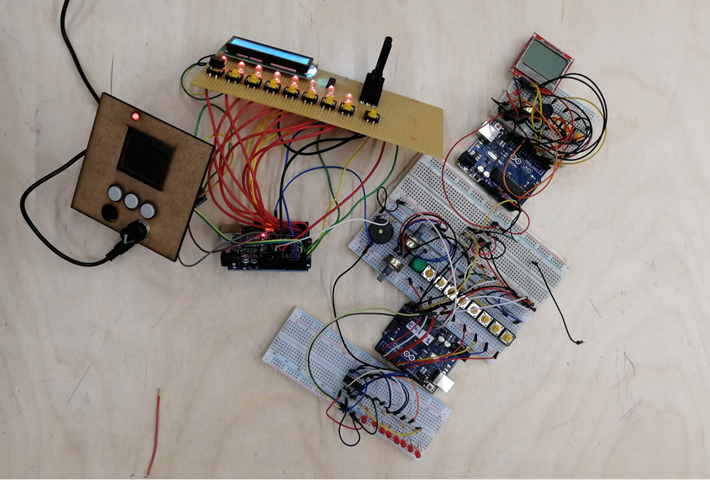
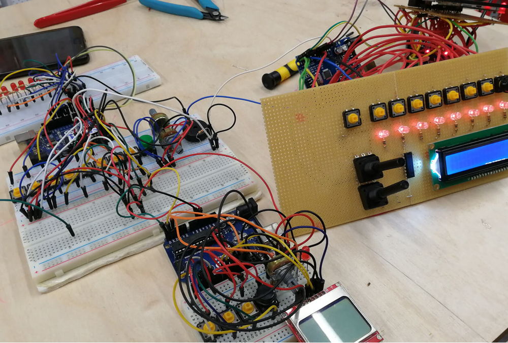

Ardusajzer
Bojan Dragutinović and I created the Ardusajzer in the makerspace using Arduino technology. This synthesizer has two voices and a two-step sequencer with 8 steps. The user can adjust the tempo to their preference and choose the pitch and duration for each step — or skip it entirely. The Ardusajzer uses three Arduino boards (one for the tempo and two for the sequencers) and has three displays for easier use.




